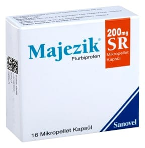

Majezik 200 mg SR Mikropellet Kapsül, 30 Kapsül

Ne için kullanılır
KT · Bölüm 1MAJEZİK SR, beyaz veya hemen hemen beyaz renkte mikropelletler içeren; kapak kısmında siyah renkte “Majezik”, gövde kısmında “SR” yazılı, mavi/beyaz “0”numara sert jelatin kapsüllerdir. Her kapsül, kontrollü salımlı mikropelletler halinde 200 mg flurbiprofen içerir ve 16 kapsüllük blister ambalajlarda kullanıma sunulmuştur.
MAJEZİK SR çeşitli ağrıları ortadan kaldırmak ya da hafifletmek amacı ile kullanılan steroid olmayan antiinflamatuvar ilaçlar (NSAİİ) olarak bilinen grupta yer alır.
MAJEZİK SR, • Eklemlerde ağrı, şişlik ve şekil bozukluğuna neden olan devamlı (kronik) bir hastalık (romatoid artrit) • Eklemlerin aşınması sonucu ortaya çıkan ve halk arasında kireçlenme olarak da bilinen bir hastalık (osteoartrit) • Eklemlerde ağrı, şişlik ve şekil bozukluğuna neden olan devamlı (kronik) bir hastalık (Ankilozan spondilit) • Akut kas iskelet sistemi ağrıları
• Akut gut artriti • Adet ağrısı (dismenore) tedavisinde kullanılır.